Compression
程度★★ 難度★
Compress / Decompress（Encode / Decode）
「壓縮」就是資料變短、重新呈現，「解壓縮」就是把短資料回復成原本資料。
compress
Thank you! -------------> 3Q!
<-------------
decompress
compress
200000000美金 -------------> 兩億鎂
<-------------
decompress
資料先壓縮、再解壓縮，如果還是跟原本資料一模一樣，就叫做「無失真壓縮lossless compression」；如果不一樣就叫做「失真壓縮lossy compression」。
壓縮演算法類型
Data Compression資料壓縮 Audio Compression聲音壓縮 Image Compression圖片壓縮 Video Compression影像壓縮
以下只介紹資料壓縮演算法，是所有壓縮演算法的基礎。電腦進行計算，最重要的就是精準無誤，所以資料壓縮演算法全部都是「無失真壓縮lossless compression」。
目前的壓縮演算法，僅僅只是把長字串變成短字串，完全不參照文字本身的格式與意義（語法與語意）。熟悉「正規語言Formal Language」的讀者，可以嘗試結合Language與Compression，開創「語言壓縮Language Compression」類型的演算法。
至於人類語言的壓縮，比如「我滿懷感激的感謝您」變成「我很感謝您」這種長話短說的壓縮，屬於文學的範疇。筆者不清楚世界上有沒有「計算文學Computational Literature」這門學問。
扯淡
古早人眼中的壓縮是：設立一種編碼方式，讓碼的長度越短越好，以三言兩語詮釋大千世界。
打個比方，白話文是不太理想的壓縮、文言文是更理想的壓縮；北京話是不太理想的壓縮、山東話是更理想的壓縮。
這種觀點下，壓縮是在編碼，壓縮是把抽象的資訊信息變成實際的碼。
北京話 ｜國語 ｜台灣話 ｜四川話 ｜山東話 甲：是誰在樓下啊？｜甲：誰在下面？｜甲：啥咪郎？｜甲：喇國？｜甲：誰？ 乙：是我在這兒唄！｜乙：我在這裡！｜乙：喜哇啦！｜乙：使握！｜乙：俺！ 甲：你在做什麼咧？｜甲：你在幹嘛？｜甲：衝啥悔？｜甲：昨傻？｜甲：啥？ 乙：我在這小便吶！｜乙：我在小便！｜乙：棒溜啦！｜乙：潦瞭！｜乙：尿！
現代人眼中的壓縮是：英文文字資料一旦儲存在電腦當中，就已經是ASCII二元碼；現在要想辦法設計新碼，讓碼的長度、加上碼表的長度，少於原本ASCII二元碼的長度。
打個比方，Doctor縮寫成Dr.、公共汽車簡稱為公車。
這種觀點下，壓縮是在轉換資料格式，壓縮是把長碼變成短碼、或者說是把長字串變成短字串。
國語 ｜壓縮的國語 ｜失真壓縮的國語｜言簡意賅的國語 如果你沒勇氣陪我到｜若你畏懼陪我到｜不愛我 ｜再見 明天的明天的明天 ｜大後天 ｜ ｜ 倒不如就忘了就斷了｜不如忘盡 ｜就忘了我 ｜ 寂寞的昨天的昨天 ｜寂寞的前天 ｜ ｜
Timus 1307
Huffman Compression
程度★★ 難度★★★
計算壓縮長度
symbol | code | code length -------| ------| ----------- a | 011 | 3 b | 0011 | 4 c | 11111 | 5 考慮字串abbacacc。 因為a出現3個、b出現2個、c出現3個， 所以abbacacc對應的碼長是： 3*3 + 4*2 + 5*3 = 9 + 8 + 15 = 32。
壓縮後的碼長越短，壓縮得越小。每個符號應該要設定什麼樣的碼，才能壓縮得最小呢？
針對一個字串，Huffman Compression可以找到一組碼，讓「壓縮長度」和「碼表長度」達到最低極限。
Code Tree
碼表的所有碼，存入Trie資料結構，得到「碼樹」。
採用二元碼，Code Tree就是一棵二元樹：往左的樹枝皆為0、往右的樹枝皆為1。取一些節點作為符號；從樹根到符號的路線，就是該符號對應的二元碼。
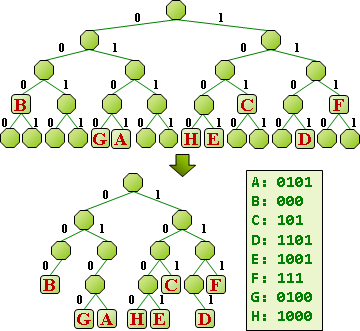只要在二元樹上面安排各個符號的位置，就能產生一組二元碼，而且保證每個碼都相異。
先前提到：一個碼是另一個碼的前綴，則解碼產生歧義──放到Code Tree上面來看，就是指一個節點是另一個節點的祖先。想解決這個問題，只要讓符號全部集中於樹葉即可！
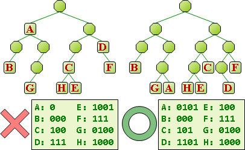Code Tree的樹葉深度總和，就是「碼表長度」。
碼長就是樹葉深度。想要減少碼長，就要減少樹葉深度。當碼長不斷減少、符號不斷挪往樹根，又要避免成為祖先，最後Code Tree便形成滿二元樹。
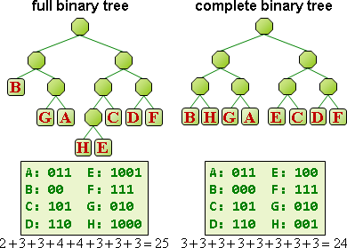調整滿二元樹的形狀，可以改變碼表長度。Code Tree長得越像全二元樹，碼表長度就越短。
滿二元樹（full binary tree）： 每個節點只有零個或兩個小孩的二元樹。 全二元樹（complete binary tree）： 每片樹葉深度都一致的二元樹。亦是滿二元樹。
UVa 283 644
Code Tree的權重，刻意定義為「壓縮長度」。
Code Tree可以擁有權重，定義為一個字串壓縮之後的碼長。
將符號出現次數填入Code Tree，做為樹葉的權重。每片樹葉的深度乘上權重，然後相加，就得到Code Tree的權重。
計算Code Tree的權重（Incremental Method）
深度相同的樹葉，可以先累計權重，再一併乘上深度。逐層累計權重，就能得到整棵樹的權重。
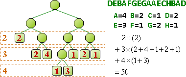計算Code Tree的權重（Recursive Method）
滿二元樹每個內部節點都有兩個小孩。滿二元樹最深的樹葉當中，一定有兩片樹葉互為兄弟。
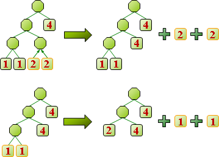我們可以嘗試刪除最深、互為兄弟的兩片樹葉，遞迴縮小問題。兩片樹葉權重相加，作為新樹葉的權重，進一步得到遞迴公式：
遞迴式： 原樹權重 = 新樹權重 + 左樹葉權重 + 右樹葉權重 化作一般式： 原樹權重 = 第一次刪除的左樹葉權重 + 第一次刪除的右樹葉權重 + 第二次刪除的左樹葉權重 + 第二次刪除的右樹葉權重 + ⋮ 第A-1次刪除的左樹葉權重 + 第A-1次刪除的右樹葉權重
Optimal Code Tree：先讓壓縮長度降到最低
Code Tree是哪一種形狀，權重才會最小呢？
根據方才的公式，Code Tree的權重取決於每次刪除的那兩片樹葉。每次刪除的那兩片樹葉權重越小，Code Tree權重就越小。
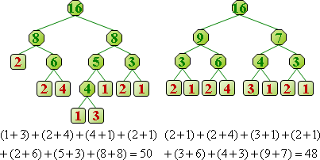反過來想，優先聚合權重最小的兩個節點，最小的相加之後還是最小的，如此遞推下去，Code Tree權重就達到最小值，得到Optimal Code Tree。
同理，亦可讓Code Tree的權重達到最大值。
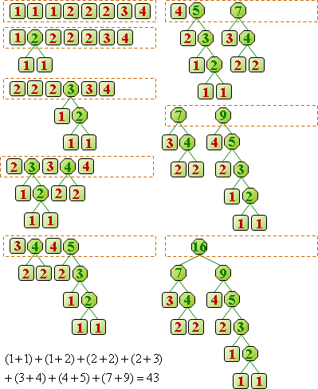一、統計各個符號的出現次數。 二、一開始有A個樹葉（節點），權重設定成符號出現次數。 現在以bottom-up方式建立Optimal Code Tree： 甲、兩個權重最小的節點，相加得到新節點的權重。 此時確立了這兩個節點的深度相同、互為兄弟， 同時確立了新節點深度比它們淺一層、是它們的父親。 乙、聚合A-1次就得到樹根了，也確立所有節點的父子關係了， 即形成Optimal Code Tree。
以Priority Queue存放節點，就能迅速找出權重最小的兩個節點。總共2A-1個push，2A-2個pop，時間複雜度O(AlogA)。A是一開始的樹葉數量，也就是符號種類數目。
Optimal Code Tree：再讓碼表長度降到最低
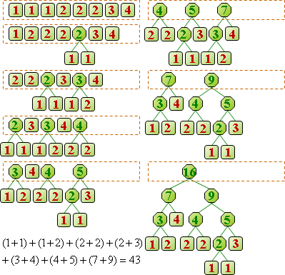碼長總和最小的節點，優先聚合即可。
數學底子好的人，就以符號出現比率，計算碼長的平均值和變異數，發現兩者皆達到最小。
Compress
建立Optimal Code Tree之後，走訪Optimal Code Tree，得到每個符號的碼，建立碼表。
可以發現：符號出現次數比較多的，碼比較短；符號出現次數比較少的，碼比較長──產生了壓縮的效果。
壓縮，就從左到右掃描文字，同時查照碼表，將文字換成碼。時間複雜度O(N)，N為文字長度。
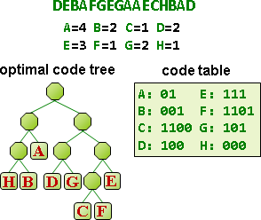Decompress
解壓縮，就從左到右掃碼，同時也從樹根開始往下走訪Code Tree。一旦走到樹葉，就將碼換成符號、回到樹根。時間複雜度O(N)，N為文字長度。
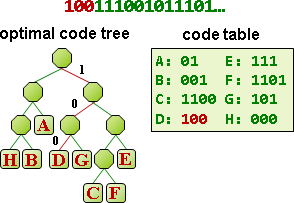UVa 240 10954 ICPC 5179 4122
延伸閱讀：Symbol Tree【尚未有正式名稱】
符號不是單獨字元，而是多個字元時，可以將碼表的所有符號，存入Trie資料結構，得到「符號樹」。
壓縮用Symbol Tree，解壓縮用Code Tree。挺好的。
Adaptive Huffman Compression
程度★★ 難度★
adaptive
此處的adaptive就是online的意思。壓縮與解壓縮時，一邊讀入符號；一邊調整Code Tree的形狀，維持是Optimal Code Tree；一邊符號換碼、碼換符號。不預先建立Optimal Code Tree。
此方法適合I/O速度很慢（例如網路）、資料量很大的情況。一邊等待資料、一邊壓縮，爭取時效。但是壓縮效果就不如原始的Huffman Compression來得好了。
癥結
這個問題最困難的地方，在於如何調整Code Tree的形狀，維持是Optimal Code Tree。
讀入一個符號，符號出現次數加一，Optimal Code Tree對應的樹葉權重加一，該樹葉的祖先們權重也都要跟著加一。
當有需要重新調整Optimal Code Tree的形狀，也就是指其中有一個節點權重加一之後，權重剛好超越了另一個節點的權重（換句話說，這些節點本來權重相同），導致另一個節點必須先聚合，權重加一的節點必須晚一點才能聚合，改變了Optimal Code Tree的形狀。
Code Tree排序所有樹葉
深度相同的樹葉互相對調，Code Tree權重不變。
把權重小、位置淺的樹葉，與權重大、位置深的樹葉對調，可讓Code Tree權重變小。
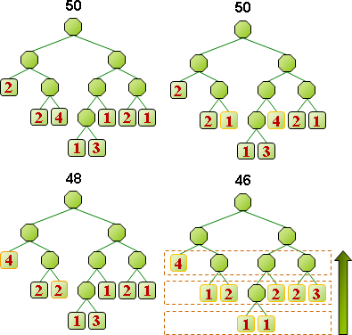換句話說，權重小的樹葉儘量挪往深處，權重大的樹葉儘量挪往淺處，可讓Code Tree權重變小。
進一步來說，所有樹葉依照權重由小到大排序之後，依序由深到淺安排位置、同一層則隨意安排位置（或者是刻意由左到右安排位置），可讓Code Tree權重達到區域極小值。
同理，亦可讓Code Tree的權重達到區域極大值。
Optimal Code Tree排序所有節點
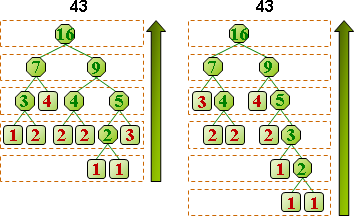Optimal Code Tree則是全部節點都能如此排序。由於建立Optimal Code Tree時，每次都是聚合權重最小的兩個節點，因而造就了排序的性質。
節點依照權重排序之後，就很容易搜尋了，能夠快速找到權重相同的節點們。
演算法
http://www.stringology.org/DataCompression/fgk/index_en.html
http://www.stringology.org/DataCompression/ahv/index_en.html
節點權重要加一之前，就先與權重相同的節點交換位置，盡量換到最上層、最右端的位置，也就是盡量換到最靠近次大權重值的位置；這個交換不會影響Optimal Code Tree的權重、仍是Optimal Code Tree。如此一來，權重加一之後，不需要改變Code Tree的形狀，仍是Optimal Code Tree；而且所有節點依然是排序好的。
別忘記該樹葉的祖先們，權重也都要加一。採用遞增法，一步一步處理：樹葉權重加一之後，再處理父親權重加一的問題。
筆者不清楚如何得到碼表長度最短的Optimal Code Tree。
Hu-Tucker Compression
程度★★ 難度★★
Alphabetic Code Tree
符號必須由小到大、從左往右排列。
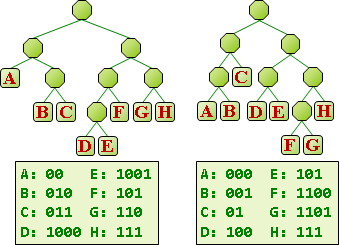特色是：符號的大小順序，就是碼的大小順序。符號比大小，就是碼比大小──可以直接使用壓縮之後的資料比大小。
有一好就有一壞，壓縮效果比起Huffman Compression就遜色了一點。
Alphabetic Code Tree的權重
與Code Tree的權重定義相同。
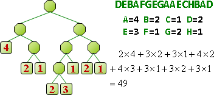計算Code Tree的權重（更玄的Recursive Method）
先前計算Code Tree的權重，是刪除深度相同、互為兄弟的兩片樹葉；關注節點之間的高度關係、父子關係。
其實還有另外一種計算方式，是改為刪除深度相同、但是不一定要互為兄弟的兩片樹葉；改為關注高度關係、無視父子關係。最後得到類似的遞迴公式：
遞迴式： 原節點集合 = 新節點集合 + 一片樹葉權重 + 另一片樹葉權重 化作一般式： 原樹權重 = 第一次刪除的樹葉權重 + 第一次刪除的另一片樹葉權重 + 第二次刪除的樹葉權重 + 第二次刪除的另一片樹葉權重 + ⋮ 第A-1次刪除的樹葉權重 + 第A-1次刪除的另一片樹葉權重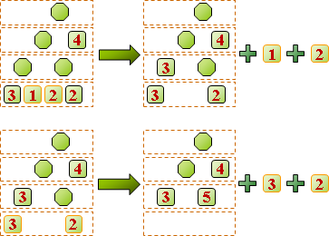
Optimal Alphabetic Code Tree
http://www.cs.rit.edu/~std3246/thesis/node10.html
http://cseweb.ucsd.edu/classes/wi06/cse202/notes-feb09.pdf
優先聚合權重最小的兩個節點，Alphabetic Code Tree的權重就會達到最小值，就和Optimal Code Tree一樣。
但是Alphabetic Code Tree限定了樹葉的左右順序，所以每次聚合的兩個節點，如果剛好都是樹葉的話，就只能是相鄰的樹葉──如此才能維持符號的左右順序。
只有樹葉必須擔心符號順序問題；樹葉一旦經過聚合之後，就不必再擔心順序問題，也不再隔開其他樹葉。
一、統計各個符號的出現次數。 二、一開始有A個樹葉（節點），權重設定成符號出現次數。 現在以bottom-up方式建立Optimal Alphabetic Code Tree： 甲、兩個權重最小的節點（不能是被隔離的兩片樹葉），相加得到新節點的權重。 此時確立了這兩個節點的深度相同（不見得互為兄弟）， 同時確立了新節點深度比它們淺一層（不見得是它們的父親）。 乙、聚合A-1次就得到樹根了，不過只能確立所有節點的高度關係。 得到Optimal Alphabetic Code Tree的權重。 丙、以top-down方式，按照高度關係，確立所有節點的父子關係。 即形成Optimal Alphabetic Code Tree。
時間複雜度為O(AlogA)。不過實作比較複雜。
【待補程式碼】
相似的樹
這三棵樹非常相似，都是「深度」乘上「符號出現次數」，令總和最小。
Optimal Binary Search Tree 所有節點都有符號出現次數，節點的位置必須按照大小排列順序。O(A^2)。 Optimal Alphabetic BinaryCodeTree 只有樹葉擁有符號出現次數，樹葉的位置必須按照大小排列順序。O(AlogA)。 Optimal BinaryCodeTree 只有樹葉擁有符號出現次數，樹葉的位置順序隨意。O(AlogA)。
組合數學和訊號學兩派人馬用詞兜不攏。 組合數學用optimum，訊號學卻用optimal。 組合數學用code，訊號學卻不用code。 上述三棵樹，雖然源自組合數學，但是訊號學當時人多勢眾， 因此採用了optimal、神隱了code。
實務上，符號種類數目通常很少，亦可運用OBST的O(A^2)演算法，求得OABT；程式碼結構簡單，執行時間也比較短。
UVa 12057 PKU 1738
Arithmetic Compression（Under Construction!）
程度★★ 難度★
Range Coding
Adaptive Arithmetic Compression（Under Construction!）
程度★★ 難度★
Range Coding
Run-length Compression
程度★ 難度★
壓縮前：aaaabbcabcbbbaaaa 壓縮後：a4b2c1a1b1c1b3a4
就這麼簡單！時間複雜度O(N)。
先實施「Burrows-Wheeler Transform」讓相同字元盡量靠在一起，再實施Run-length Compression，可以提升壓縮效果。
UVa 11541 12547 ICPC 3867
Dictionary Compression
程度★★ 難度★
Dictionary Compression
把常見單字、常見字根，當作符號，設定短碼。編碼與解碼宛如查字典，通常以Trie做為字典的資料結構。
the => <
that => >
ing => _
is => +
ness => #
ation => ^
less => =
to => {
from => }
ed => `
of => &
也是很簡單！時間複雜度O(N)。
Antidictionary Compression
只能處理01字串。
http://www.stringology.org/DataCompression/dca/index_en.html
anti-dictionary contain some minimum forbiden substring that is, d[1...n] and d[0...n-1] in s, but d[0...n] not in s. compress: when read s[i] if (any suffix of s[0...i-1]) + (x) is in anti-dictionary then no output s[i] else output s[i] decompress: if (any suffix of output) + (x) is in anti-dictionary then output the inverse(x) else read and output t[i] all you need is a suffix trie
Lempel-Ziv Compression
程度★★ 難度★
ACB Compression
程度★★ 難度★
Associative Coder of Buyanovsky
http://www.cs.brandeis.edu/~fabricio/files/cosci170.htm
PPM Compression
程度★★ 難度★
Prediction by Partial Matching
http://www.stringology.org/DataCompression/ppmc/index_en.html
http://en.wikipedia.org/wiki/Prediction_by_Partial_Matching
Hybrid
程度★★★ 難度★
DEFLATE
http://en.wikipedia.org/wiki/DEFLATE
gzip
http://en.wikipedia.org/wiki/Gzip
Bzip2
http://en.wikipedia.org/wiki/Bzip2
Zopfli Compression